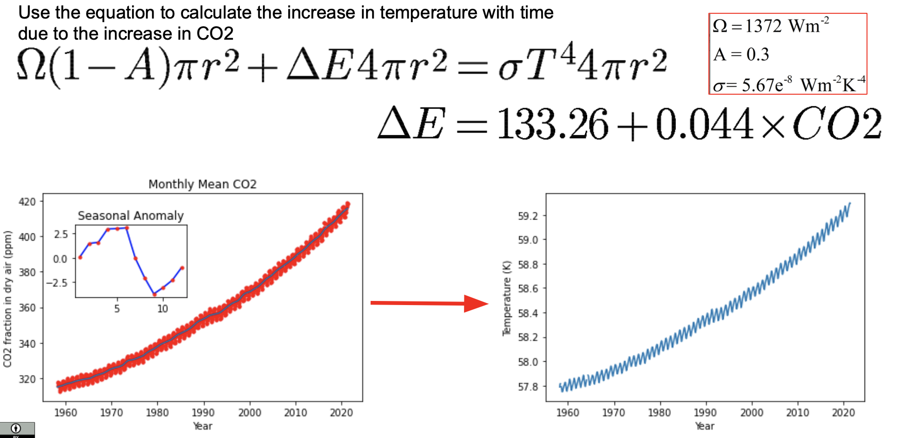
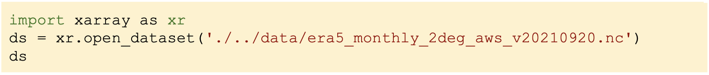
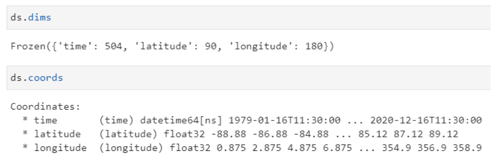
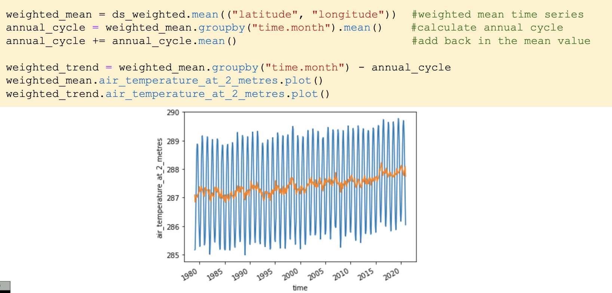

Case Study in Climate and Physical Data
The Greenhouse Effect
The Greenhouse Effect is the foundation of climate change.
Keeling Curve
In 1958 Keeling got a grant to begin monitoring CO2 in Hawaii. Roger Revelle (a famous scientist) argued that because CO2 was too variable, they just needed a snapshot at that time and another snapshot 20 years later to show that CO2 was increasing. Keeling advocated for precise measurements over time. By the mid-1960s we had both a measurement of the Earth’s breathing and the global increase in CO2.
How would you remake this figure?
Calculating the Greenhouse Effect
Goal: Calculate how the Earth’s temperature is changing with increasing CO2.
The planetary energy balance: Energy absorbed (from the Sun) = Energy emitted (by the Earth)
How does CO2 affect the planetary energy balance? 1. The Sun emits radiation that is absorbed by the Earth (though roughly 30% of the energy the sun radiates is reflected by clouds, ice/snow, deserts, etc.. The fraction of radiation from the Sun that gets reflected back to space by the atmosphere is called albedo) 2. The Earth emits radiation according to Stephen-Bolzman’s Law: the rate that a body emits radiation (per unit area) is directly proportional to the body’s absolute temperature to the fourth power (blackbody radiation). 3. The emitted radiation doesn’t all go back into space …
Our atmosphere is like a blanket, it traps some energy.

Using this equation we can calculate the increase in temperature with time due to the increase in CO2.

Additional Words on the Severity of Climate Change
From the Intergovernmental Panel on Climate Change (IPOC): “Recent changes in the climate are widespread, rapid, and intensifying, and unprecedented in thousands of years. Unless there are immediate, rapid, and large-scale reductions in greenhouse gas emissions, limiting warming to 1.5 C will be beyond reach. It is indisputable that human activities are causing climate change, making extreme climate events, including heat waves, heavy rainfall, and droughts more frequent and severe. However, some changes could be slowed and others stopped by limiting warming.”
With every increment of global warming, changes get larger:
A decade ago scientists would argue that we can’t attribute any single weather event to climate. In the last decade, we have all experienced major shifts in our climate through changes in our local weather and scientists have figured out ‘climate change attribution’.
They look at the probability of the occurence of an event (e.g. a temperature extreme) in models run without human-influence and them compare it to the probability in models run with human-influence.
ERA5 and Xarray
ERA5 - 5th gen ECMWF atmospheric global climate ReAnalyses
ERA5 combines vast amounts of historical observations into global estimates using advanced modeling and data assimilation systems. From 1979 - 2019, hourly estimates of atmospheric, land and oceanic climate variables were taken. The number of observations assimilated in ERA5 has increased from approximately 0.75 million per day on average in 1979 to around 24 million per day by the end of 2018. It is a key dataset used for understanding our weather and climate, but it is accessible to only a few privileged institutions.

Working with Xarray
Xarray: Dataset
Xarray Datasets are essentially groups of DataArrays. This is really valuable when you are looking at datasets that have multidimensional groups of data (e.g. temperature, cloud cover). Some Xarray methods can be applied to all that Dataset contains. For example, you can subset a Dataset and the subset, interpolate, calculate a mean, and it will do this across all the DataArrays the Dataset contains.
Xarray: Read in Dataset

Coordinates vs. Dimensions
DataArray objects inside a Dataset may have any number of dimensions but are presumed to share a common coordinate system. Coordinates can also have number of dimensions but denote constant/independent quantities, unlike the varying/dependent quantities that belong in data. A dimension is just a name of an axis, like “time”.

DataArrays are Data Variables in a Dataset
A DataArray holds multi-dimensional information. DataArray objects inside a Dataset may have any number of dimensions but are presumed to share a common coordinate system.
You can explore the data easily using either of the following syntax:
- ds[“air_temperature_at_2_metres”]
- ds.air_temperature_at_2_metres
DataArray Access: , sel, isel
- Ex: point = ds_air_temperature_at_2_metres[0,26,119]
- isel: integer/positional
- Always 0-based
- Slices as usual, end-point exclusive
- Ex: point = ds.isel(time = 0, latitude = 26, longitude = 119)
- sel: coordinates
- Strings, integers (coordinates)
- Slices: end-point inclusive!
- Ex: point = ds.sel(time = “1979-01”, latitude = 37.125, longitude = 238.875)
Methods can be called across a DataArray or a Dataset
Select data and plot data in one line (using matplotlib)
Weighing Data Using Xarray
Xarrry provides the ability to weigh your data
Xarray methods like .weighted() can be combined with .mean() to create means across coordinates.
We can use .groupby() in combination with the above methods to calculate the annual temperature cycle.

Plotting Temperature Trend with Respect to Locatoin
Summary
- Xarray is a powerful tool to analyze climate data
- The models use “parameterizaitons’, which are approximations for all sorts of different physical processes. Each parameterization uses coefficients derived from data science, but the experiments may be limited or imperfect. Often, parameters are adjusted to compensate for an error, but then end up causing other issues. This is still being worked on.
- Society needs more data scientists working with climate and weather scientists to look at data similar to what was presented in this note. People like you can help to find new discoveries, amplify messages about changes to our climate and their impacts, and build machine learning models to replace old parameterizations.